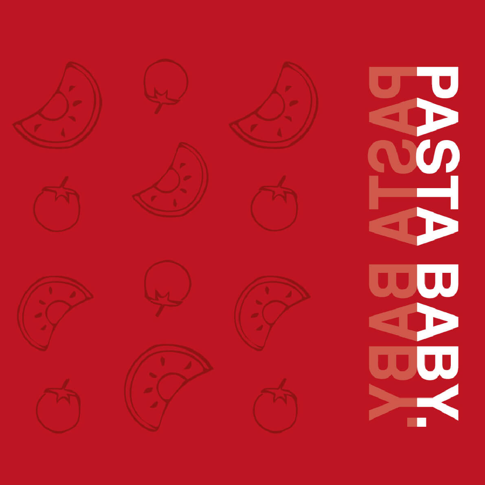
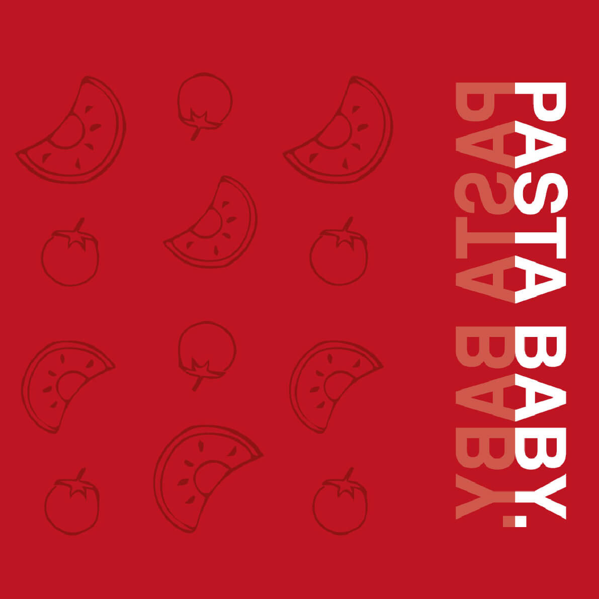

Pasta artwork
This is an artwork inspired by one of my first web design assignments for school. The assignment was: Choose your favourite type of food and design a website for it. We were all given an art style to work with.
My given style was: oude school. Driven by abstract forms, where fonts like Helvetica would be playing the lead in the artwork. I was so inspired because I had great experience in Graphic design already.
In the end I made a few mistakes with the web design, sizing and proportion wise. For this reason I picked some parts of the design that truly represent me as a designer. These pieces still inspire me to this day and it’s really what I’m all about: Creating something funky and inspiring, while also keeping it simple.
 
